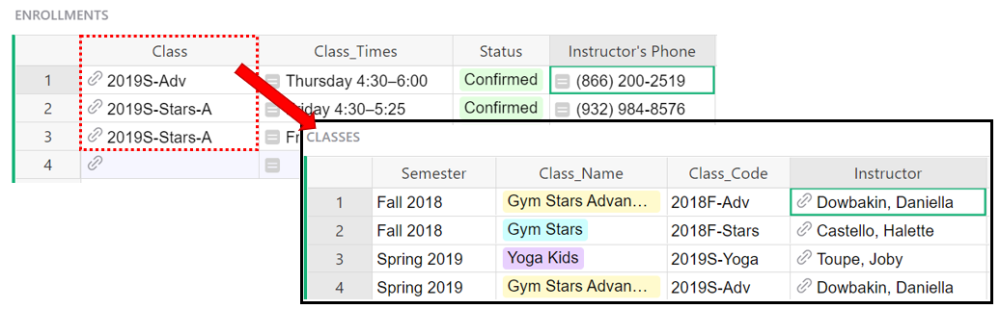

Using References and Lookups in Formulas#
Reference and Reference List columns in Grist allow one table to create an explicit reference to another. A common example of this is seen in the Class Enrollment template.
On the Staff page, we have a list of staff members. On the classes page, we have a reference column labeled Instructor that references the records on our Staff page.

Keep in mind, it’s not just referencing the Full Name column but the entire record associated with the selected instructor.
Reference columns and dot notation#
Using a Reference column within a formula can make it easy to get any data from the referenced record. To do this, we use dot notation. It uses the format $A.B where A is the name of the reference column and B is the name of the column of the referenced table that we want to pull data from.
Let’s see this in action on the Enrollment View page of the Class Enrollment template. Dot notation is used in the Class_Times column of the ENROLLMENTS table, found at the bottom right of the Enrollment View page.

We can see that the Class_Times column is using a formula with dot notation. Using the format $A.B described above, we can figure out that Class is the name of the reference column and Times is the name of the column of the referenced table.
Let’s track this back to where it’s pulling from - since the reference column is Class, we can look at that column’s information to find out what table it is pulling from.

The Class column references data from the Classes table. Therefore, the Class_Times column is pulling from the Times column of the Classes table.

Chaining#
If the reference field is itself a reference, this can be chained.
Perhaps we want to add the Instructor’s phone number to the Enrollments table. We can use the Class reference column to pull the instructor’s information from the Classes table.

As you can see in the screenshot above, the instructor column is a reference column itself. If we follow the format from before, our dot notation would be $Class.Instructor but the Instructor column points to the entire record of the instructor so we need to tell it what information we want from this record, creating a chain.
The instructor column references the Staff table so we navigate there to find out what column we need to pull information from in order to get the phone number. The column that contains the instructor’s phone number is Phone.

Putting this all together, our dot notation for the instructor’s phone number would be $Class.Instructor.Phone

It would be helpful to also pull in the Instructor’s name into the Enrollments table. Again, we use the Class reference column to pull the Instructor’s information from the Classes table.

The instructor’s name is under the Instructor column. We can see that the Instructor column is a reference which means it is pointing to the entire referenced record. If you set your formula to $Class.Instructor, it won’t pull in the instructor’s name. It will pull in their record ID, like you see below;

Again, a reference column points to an entire record - so we still need to tell it which part of the record we want. In this case, the Instructor column points to the record in the staff table. As we did with phone number, we need to find the column in the staff table with the information we want to pull. We will pull from Full Name, making our formula $Class.Instructor.Full_Name.
In review, our dot notation for the instructor’s name would be $Class.Instructor.Full_Name and for their phone number, $Class.Instructor.Phone.

lookupOne#
Another way to point to a record is using Table.lookupOne(…) function. lookupOne allows you to look up a record by some fields, similar to Excel’s VLOOKUP. In fact, Grist’s version of VLOOKUP is merely an alias for lookupOne. lookupOne is rarely useful in Grist, because using a Reference type column is usually the preferred solution to connect records. However, on some occasions, lookupOne can be useful. One situation is when you have two sets of data which overlap even though they represent something different and perhaps come from different sources.
For example, let’s say that you run an event and have Attendees, as well as Sponsors. Attendees are stored in one table, perhaps populated via a form integration.

Sponsors are in a separate table, with fields related to their sponsorship, and perhaps maintained by another team.

Both tables contain email addresses which identify attendees and sponsors. Sometimes a sponsor may register to attend the event. In that case, you’ll have an Attendee record with an email address that also appears in the Sponsors table. That’s useful to know for someone looking at the attendee list. You can find a record in the sponsors table by email address by adding a formula in the Attendees table as seen below;
Sponsors.lookupOne(Contact_Email=$Registration_Email)
Sponsors.lookupOne(Contact_Email=$Registration_Email) is looking to see if a Contact Email from the Sponsors table matches a Registration Email from the Attendees table.
The general format for this formula is [Table_Name].lookupOne([A]=$[B])
Where [Table_Name] is the name of the table you want to lookup data in. [A] is the column in the table being looked up (named at the beginning of the formula) and [B] is the column in the current table / the table you are entering the formula in.

Such a formula returns a reference. In fact, it’s often a good idea to create a column for the lookup result and change its type to Reference, as you see in the screenshot above. Then, if there is a match, the reference column will pull in the data from the other table. In this case, it will pull in data from the Company column of the Sponsors table.
lookupOne and dot notation#
This is also easy to use in other formulas. You can use the value from lookupOne within the same formula, while using dot notation as seen below.
Sponsors.lookupOne(Contact_Email=$Registration_Email).SponsorLevel
We have already seen the first part of this formula. Sponsors.lookupOne(Contact_Email=$Registration_Email) is checking if a Contact Email from the Sponsors table matches a Registration Email from the Attendees table.
With the addition of .SponsorLevel, if a match is found, pull the data from the Sponsor Level column for this record.

Now, we have the Sponsor Level listed in the Attendee table for those attendees whose emails also appear on the sponsor list.
Reference lists and dot notation#
Sometimes it is important to deal with a list of references. These can come from a Reference List Column which is a collection rather than a single data item. A great example of this is seen on the Habit Tracker template.
On the Habits + Goals page, we have a list of habits and a goal for how often we wish to complete that habit. On the Habit Tracker page, we have a Reference List column labeled Habits Completed that references the records on our Habits + Goals page.
The only difference between a Reference column and a Reference List column is the ability to select multiple references.

Python for loop#
If you are saavy with Python, you can iterate through a Reference List using a Python for loop. When iterating, each element is a Reference so dot-notation can be used here as well. If you are not saavy, no problem - skip this section and go right into lookupRecords to do the same thing, using Grist functions.
SUM(person.Balance for person in $Registrants)
Dot-notation works too, but returns a list of all the selected field;
$Registrants.Balance is a list of the Balance field from each person in the list of $Registrants.
So SUM($Registrants.Balance) and SUM(person.Balance for person in $Registrants) are equivalent.
If you’d like to learn more about Data Structures and List Comprehension in Python 3, Python.org is a great resource.
lookupRecords and len()#
You can also get a list of references using lookupRecords which is a Grist function.
For Python users, this return value may be used in the examples discussed above.
registrants = Registrants.lookupRecords(Event=$Event)
SUM(person.Balance for person in registrants)
or
registrants = Registrants.lookupRecords(Event=$Event)
SUM(registrants.Balance)
Often, it is also useful to get the number of items within that list of references. To do this, we can use len(). It applies to record lists generated through either a Reference List column or a lookupRecords formula.
len(Table.lookupRecords(Column_A=$Column_B)) counts the number of records returned by a lookupRecords function.
You can also do this on a reference list because a reference list is the same thing, a list of records.
len($RefList)
We’ll jump back to our earlier example where we had a list of Attendees and Sponsors - perhaps it’s a big company that runs many events. All attendees for all events are on a single table. We want to see how many events our Sponsors have attended. We can use lookupRecords to do this. I can create a new column in my Sponsors table called “Events Attended” and add the following formula to pull in that information;
len(Attendees.lookupRecords(Registration_Email=$Contact_Email))

Let’s break down the two parts of this formula, working from the inside out.
Attendees.lookupRecords(Registration_Email=$Contact_Email) is looking for matches between the Sponsors table’s Contact Email and the Attendees table’s Registration Email. All records in the Attendees table that match are added to a list of records. Try writing the formula without len() to see what Grist returns. It should look something like this.

That’s a list of records.
len() counts how many records are in that list.

As long as you have two columns to compare, lookupRecords can be used between any two tables!
Reverse lookups#
There’s another way to write the Events Attended formula by using a reverse reference lookup. Here, we use the record $id to find a record. Every row has a numeric id (available as $id in formulas) that is unique within that table. You can reveal the id by adding a formula column where formula = $id

Since Attendees.Sponsor is a reference column pointing to a Sponsor record, then it actually stores the unique ID of this sponsor. So in a formula for Sponsor, using the lookup below, we will find all Attendees records tied to the current sponsor.
len(Attendees.lookupRecords(Sponsor=$id))

Breaking down the formula, we are counting the number of records in the Attendees table where the Sponsor column matches the ID of the row in this table (the Sponsor table).
lookupRecords with multiple arguments#
Another example of a reverse lookup can be found in the Count column of the Classes table of the Class Enrollment template. This column shows us how many students are enrolled in each class. The formula used here is;
len(Enrollments.lookupRecords(Class=$id, Status="Confirmed"))

Enrollments.lookupRecords(Class=$id, Status=”Confirmed”) will lookupRecords in the Enrollment table where Status is “Confirmed” and the Class column matches the ID of the row in this table. Because the Class column is referencing the Classes table, we can use the ID in the lookup. If there was no reference between the two tables, we could use Class=$Class_Code.
len() counts the items in a list, so everything it found within Enrollments.lookupRecords(Class=$id, Status=”Confirmed”).

If you’d like a video walkthrough of a reverse lookup, we have another example in our Build with Grist Webinar - Trigger Formulas v. Formulas.
lookupRecords and dot notation#
Similar to lookupOne, you can use Dot Notation with lookupRecords. Check out the Private Tutor Billing template for a great example of this. On the Families page, we have a table with quite a few formula columns! We’ll take a look at the Total Paid column for our example. The formula used here is;
SUM(Payments.lookupRecords(Family=$id).Amount)

Let’s break this down a bit. Starting with Payments.lookupRecords(Family=$id) - this format should look familiar to what we saw in the previous example. The Family column in the Payments table is a reference column pointing to this table. The lookupRecords formula is matching the Family column in the Payments table to the IDs of records in this table.
Now, let’s tack on the dot notation portion to make it Payments.lookupRecords(Family=$id).Amount - we are telling it to specifically lookup the Amount for records in the Payments table where the Family column matches the ID of the row in this table. Remember - the Payments table has a reference column that points the the Families table, this is why we can use the $id.
Last but not least, we need to SUM() all of those amounts together! That gives us the total amount paid for each family.